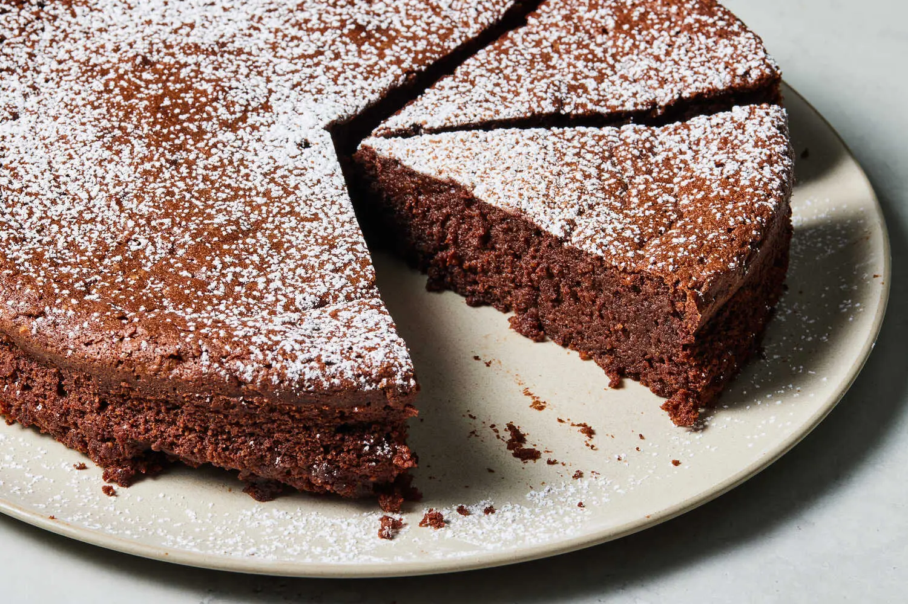

Chocolate Torte (Torta Caprese)

Description
Torta caprese is a dark, rich almond and chocolate cake lifted only with whipped eggs. Originally from the Italian island of Capri, they’re usually made with raw almonds or almond flour. This version uses toasted, salted almonds to add a bit more savory, roasted almond flavor. The almonds must be ground in a food processor before folding into the batter, but if you don’t have one, feel free to substitute 6 ounces almond flour plus ½ teaspoon more salt. Adding some of the sugar to the egg whites while beating makes it much easier to achieve medium-stiff peaks without over-beating them. It also makes them smoother and easier to incorporate into the chocolate mixture and helps create a light flaky top.
Ingredients:
- 6ounces/170 grams roasted, salted almonds (see Tip)
- 1cup/200 grams granulated sugar
- 8ounces/227 grams bittersweet chocolate, chopped
- 1cup/227 grams salted butter, chopped
- 1tablespoon pure vanilla extract
- 1teaspoon instant espresso powder (optional)
- ½teaspoon kosher salt (such as Diamond Crystal)
- 6large eggs
- Powdered sugar or unsweetened cocoa powder, for dusting
Instructions:
- Heat the oven to 325 degrees. Process the almonds and all but 2 tablespoons of the sugar (¾ cup plus 2 tablespoons/175 grams) in a food processor until finely ground.
- Set a large heatproof bowl over a pot of barely simmering water. Be sure the water doesn’t touch the bottom of the bowl. Add the chocolate and butter to the bowl and heat, stirring, until both are melted and combined. Remove from the heat and stir in the vanilla, espresso powder, if using, and salt. Add the almond mixture to the melted chocolate mixture and stir to combine.
- Separate the egg whites and yolks. Stir the yolks into the chocolate mixture and place the whites in a large bowl or the bowl of a stand mixer. With an electric mixer or a stand mixer on medium, beat the egg whites until foamy. Increase the speed to high and continue to beat the egg whites, gradually adding the remaining 2 tablespoons sugar, until medium-stiff peaks form, about 2 minutes.
- Use a large flexible spatula to fold the egg whites into the chocolate mixture by gently scooping up some of the mixture from the bottom and folding it over the top, rotating the bowl and repeating until combined. It’s OK if you have a few streaks of white remaining.
- Transfer the mixture to a 9-inch springform pan with a removable bottom. Bake until a toothpick inserted into the cake about 2 inches from the edge comes out with moist crumbs attached, 30 to 40 minutes.
- Transfer the cake to a rack to cool. When completely cool, run a paring knife around the edges to release the cake then remove the pan edge. Transfer cake to a serving plate and dust with powdered sugar or cocoa powder to serve. Store leftovers in an airtight container at room temperature for up to 3 days or frozen for up to one month. Thaw at room temperature to serve.
Source: NYTimes Cooking
Home